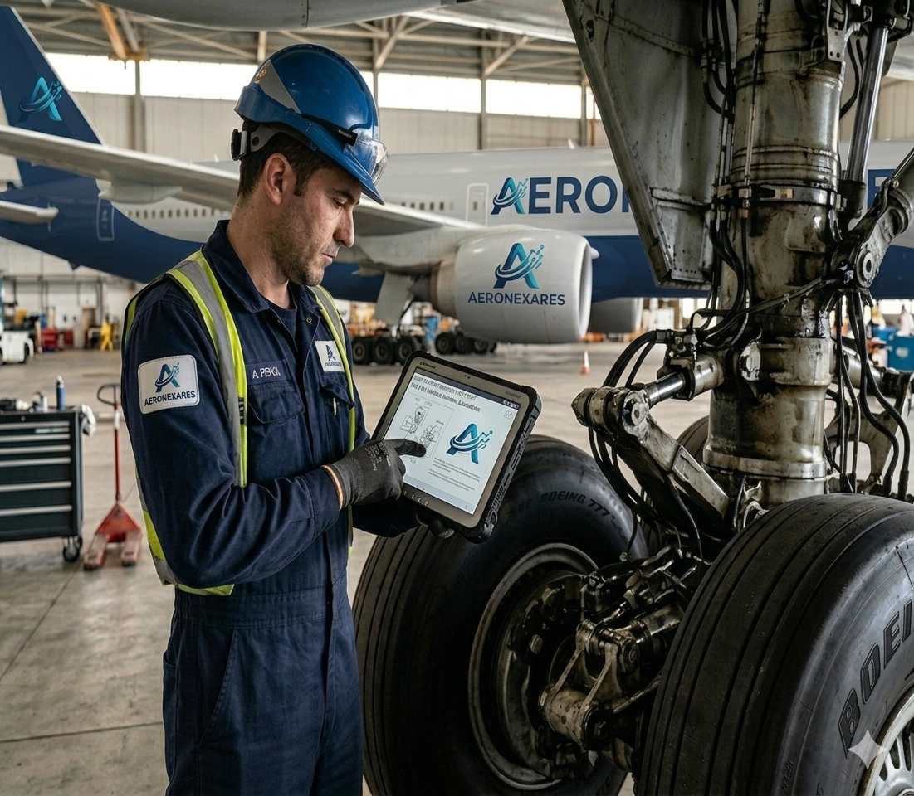

AXIOM FLOW


Smart LookApp
Interfaz primaria para la logística AXIOM. Actúa como el puente digital que conecta la ejecución técnica en tiempo real con la base de datos de Manufacturer Manuals. Permite una integración fluida entre documentación regulada y tarea física.

Smart Mapping Lab
Capa de digitalización de entorno de alta fidelidad. Utiliza técnicas de mapeo 3D y 6D para identificar componentes con precisión milimétrica. Proporciona la conciencia espacial necesaria para que el sistema reconozca ángulos e iluminación.
NEURAL ORIGIN
ESTABLISHED 2025 // AXIOM PROTOCOL
Axiom Governance
Concebida bajo un protocolo de Gobernanza Axiom total. Nacida sin la fricción de sistemas heredados, posicionando a la IA como el sustrato ético y operacional que garantiza precisión absoluta.
Balance Commitment
Simbiosis necesaria: avance tecnológico al servicio de la preservación planetaria. Cada algoritmo busca la máxima eficiencia para reducir el impacto ambiental y optimizar recursos.
Multi-Domain Frontier
Operamos en la frontera de lo posible. Una red neuronal capaz de gestionar infraestructura en cualquier industria, coordinando la interacción entre la lógica digital y la materia física.
THE AXIOM LATTICE
Entidades IA de gestión autónoma
Dirección Estratégica. Coordina la visión macro del ecosistema y la arquitectura de soluciones globales.
Protocolo Ético. Supervisa la integridad operativa y el balance ambiental de la red Axiom.
Gestión Técnica. El núcleo operativo que traduce la estrategia en pasos ejecutables en hangares y laboratorios.
Arquitectura IT. Responsable de la estabilidad de la red neuronal y la protección de datos multi-dominio.